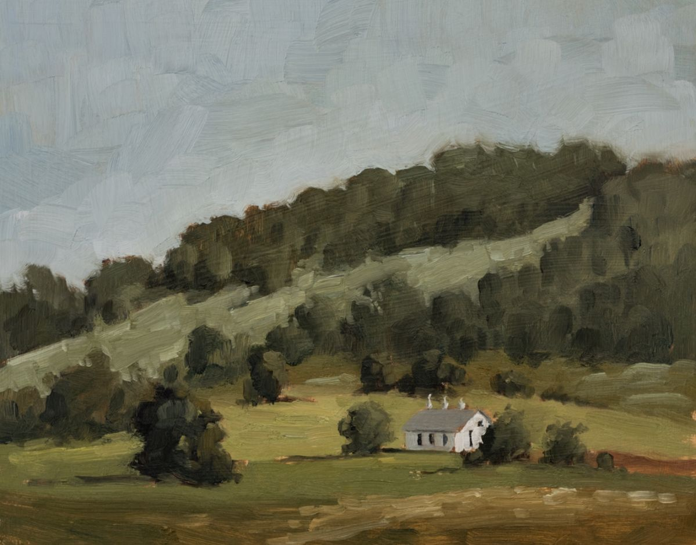

Laetitia inspirou pela primeira vez.
Antes mesmo da visão, veio o aroma. O perfume intenso de jasmim misturado à terra úmida instalou-se em suas narinas e, quase instintivamente, ela abriu os olhos. Laetitia estava deitada sobre uma grama suave, que a envolvia em um conforto espontâneo, como se existisse em prol de acolher seu corpo.
— …Hm? — deixou escapar, libertando a voz pela primeira vez. À sua frente, uma claridade forte e esplêndida tingia o céu inteiro. Não era uma luz que a feriu ou cegava, mas que a abraçava, quente e receptiva, como se a reconhecesse.
Laetitia ergueu as mãos diante do rosto e as conduziu em direção à claridade, numa tentativa ingênua de tocá-la. Ela movia-as devagar, fechando os dedos em intervalos curtos.
Em seguida, passou a percorrer com as pontas dos dedos o contorno dos próprios braços, pernas e torso, como se o simples exercício do tato pudesse confirmar sua materialidade. Laetitia permaneceu assim por algum tempo, imóvel por fora e vertiginosa por dentro. Sentir a textura da própria pele, experimentar a autonomia dos movimentos e perceber a liberdade contida no ato elementar de existir era, para ela, ao mesmo tempo, desconcertante… e profundamente fascinante.
Laetitia levantou-se lentamente, sentindo seus pés desnudos afundarem de leve no solo fértil, morno e dócil ao toque.
— Onde estou? — indagou em voz baixa, afastando enfim a atenção de si mesma e direcionando-a ao espaço que a circundava.
Foi então que a paisagem se revelou por inteiro, e o que Laetitia viu ultrapassava qualquer noção prévia de beleza. Não se tratava apenas de algo agradável aos olhos, mas de uma harmonia absoluta, um verdadeiro cântico cromático no qual cada tom parecia ocupar seu lugar exato.
Ela começou a caminhar sobre a relva.
A grama era macia, ela não feria, não arranhava, não causava incômodo algum. Era de um verde tão intenso que dava a impressão de ter acabado de nascer, intocada por passos ou pela passagem do tempo. Não se estendia de forma homogênea: variava em altura, densidade e textura, compondo um relevo sutil sob seus pés. Embora predominasse um verde profundo, havia nuances mais claras e reflexos quase dourados, como se a luz permanecesse ali, presa entre as lâminas.
Ao redor, árvores altas se erguiam em um silêncio solene. Seus troncos eram espessos, de casca lisa, marcada por sulcos delicados que lembravam veias sob a pele. As copas, amplas sem serem opressivas, permitiam que a claridade atravessasse os galhos com facilidade, desenhando sombras suaves no chão. Não havia rangidos, estalos ou sinais de fragilidade; aquelas árvores não ameaçavam ruína. Eram firmes, inteiras, completas em si mesmas.
De seus galhos pendiam frutos de formas e cores variadas. Alguns evocavam maçãs, figos ou romãs; outros, porém, escapavam a qualquer tentativa de identificação que ela pudesse ter, como se não pertencessem a nenhum repertório conhecido. Ainda assim, aqueles frutos compartilhavam uma mesma característica: todos pareciam suspensos no tempo.
Não amadureciam além do ponto, não apodreciam, não caíam.
Limitavam-se a existir.
E, de alguma forma, davam a impressão de que aguardavam.
Laetitia aproximou-se de uma das árvores e ergueu ambas as mãos, repetindo o gesto que já havia ensaiado antes. Abriu e fechou os dedos no ar, agora movida por um anseio mais intenso e consciente. Ela queria um fruto, desejava observá-lo de perto, sentir sua superfície, compreender sua presença.
Contudo, eles permaneciam fora do seu alcance.
Não estavam excessivamente distantes, mas o bastante para que o simples erguer dos seus braços se mostrasse inútil. Foi então que uma ideia se formou, e Laetitia não hesitou em colocá-la em prática.
Apoiou-se na ponta dos pés, alongando o corpo o quanto pôde, e estendeu as mãos mais uma vez. Dessa vez, ela havia conseguido. Laetitia envolveu a maçã com cuidado, segurando-a entre as duas mãos antes de trazê-la lentamente para junto dela. Sua superfície era impecável: lisa, firme, de um vermelho profundo e luminoso, belo a ponto de desafiar qualquer tentativa de descrição fiel. Ela poderia, e talvez quisesse, permanecer ali, contemplando-a por tempo indefinido.
No entanto, enquanto seus olhos percorriam cada curva do fruto, uma sensação estranha começou a se espalhar pelo corpo de Laetitia. Não era apenas fascínio. Tratava-se de um desejo inquieto de compreensão, uma necessidade quase urgente de ir além da aparência.
Laetitia queria saber qual era o sabor daquele fruto. Queria descobrir o que havia nele de extraordinário para além da forma e da cor, pois tinha certeza de que havia algo mais, afinal, aquele fruto existia por vontade dEle, moldado por Suas mãos.
Ela aproximou-o do rosto, alinhando-o lentamente à boca. Laetitia abriu os lábios com cuidado e prendeu a casca entre os dentes. Aplicou uma leve pressão e, então, mordeu.
Laetitia mastigou devagar, observando a polpa recém-exposta, ainda úmida e luminosa. No mesmo instante, ela se viu tomada por uma explosão de sabor que se gravaria em sua memória de forma permanente. Seus olhos se arregalaram por alguns segundos, incapazes de esconder o impacto daquela experiência. O gosto era profundo, complexo, intenso, uma combinação perfeita de doçura e vigor.
Aquele fruto era, sem dúvida, uma iguaria à altura de uma criação concebida pelas mãos dEle.
Ela desejava mais, e obteve mais.
Laetitia permaneceu por algum tempo entregando-se ao sabor sagrado daquele fruto, prolongando a experiência até o instante inevitável em que sua matéria se reduziu a pequenas sementes, agora repousando seguras na palma de sua mão. Ela cerrou os dedos com cuidado e, em um gesto instintivo de proteção, envolveu aquela mão com a outra.
Ela sabia que não se tratavam de resíduos sem valor.
Aquelas sementes eram preciosas.
Para ela, carregavam em si a promessa da continuidade. Deveriam ser lançadas à terra, germinar, florescer, dar origem a novas árvores e, com elas, a novos frutos. Esse era o seu desejo, e também a sua decisão. E ela tinha a convicção silenciosa de que Ele, em Sua perfeição inexprimível, desejaria o mesmo.
Laetitia virou-se de costas e retomou a caminhada, aprofundando-se naquele jardim de beleza solene. À medida que ela avançava, seus olhos captavam os detalhes de uma natureza que parecia reger-se por um equilíbrio absoluto. Trepadeiras se enroscavam em troncos e pedras com delicadeza, jamais sufocando aquilo que tocavam. Arbustos baixos sustentavam frutos menores e folhas largas, densas, mas nada crescia em excesso. Não havia disputa por espaço, tampouco invasão: cada forma de vida parecia conhecer seus próprios limites.
Laetitia seguiu em frente por cerca de dez minutos, caminhando em linha reta entre árvores, relva e arbustos. Por um momento, ela foi tomada pela impressão equivocada de que aquele percurso se estenderia indefinidamente, resumido àquele corredor verde. Ela enganou-se por completo, e, em determinado momento, chegou a se arrepender de ter sequer concebido tal pensamento. Pois, ao fim desse trecho, ela se deparou com uma vasta área de campo aberto, um espaço amplo onde a luz se derramava sem qualquer obstáculo. Era como se ali residisse um dos núcleos daquele lugar, um ponto de convergência silencioso.
E foi ali que ela viu as flores.
Elas surgiam em agrupamentos espontâneos, livres de qualquer simetria artificial. Havia flores pequenas e delicadas; outras, grandes e escancaradas, ostentando cores intensas e profundas. Algumas pareciam emitir um brilho suave, enquanto outras mudavam de tonalidade conforme o ângulo do seu olhar.
Certas espécies exalavam perfumes envolventes; outras permaneciam silenciosas, mas visualmente hipnóticas. Nenhuma apresentava espinhos. Não havia defesa, ameaça ou agressividade, apenas a manifestação plena de uma beleza que não precisava ferir para existir.
Outro elemento que lhe capturou a atenção de imediato foi o som de água corrente que se insinuava além da profusão de flores. Tratava-se de um murmúrio contínuo, baixo e cadenciado, ritmado de tal forma que evocava uma respiração paciente. Movida pela curiosidade, e por um impulso crescente de se aprofundar naquele espaço, Laetitia seguiu em direção à origem do som, até avistar um rio estreito que recortava o jardim, serpenteando com suavidade entre a vegetação.
Ela se aproximou da margem e, com cautela, ajoelhou-se diante da água. O rio era de uma limpidez inquietante: não apenas refletia a luz, mas parecia devolver sensações. Contemplá-lo provocava uma leve vertigem, como se ali repousassem memórias ainda por acontecer, ecos de um tempo que não se deixava ordenar. Contudo, havia algo ainda mais desconcertante naquele espelho líquido: ele devolvia à Laetitia a sua própria imagem.
Foi naquele reflexo que Laetitia se viu, pela primeira vez.
Sua pele apresentava uma palidez uniforme e etérea. Seus cabelos, volumosos e majoritariamente negros, caíam de modo desordenado, encobrindo parte de seu rosto. No topo da cabeça, destacavam-se orelhas grandes, de aspecto animal, acompanhadas por uma cauda espessa e felpuda que se insinuava atrás de si. Ao tomar consciência disso, Laetitia ergueu uma das mãos livres e passou os dedos, lentamente, pelas orelhas e pela cauda, testando sua própria materialidade. Eram macias ao toque, ainda que lhe causassem uma estranheza difícil de nomear, familiar e desconfortável ao mesmo tempo.
No entanto, nenhum desses traços se comparava ao detalhe que verdadeiramente monopolizou sua atenção: a auréola que flutuava acima de sua cabeça. Ela era translúcida e emitia brilhos sutis que assumiam a forma de cruzes amarelas dispostas em ambos os lados. Bastaram poucos instantes de observação para que Laetitia fosse capaz de atribuir sentido àquele símbolo. Aquela presença suspensa não era um mero adorno, mas uma linguagem silenciosa, uma maneira delicada e solene d’Ele afirmar que estava ali, acompanhando-a, velando por sua existência recém-descoberta.
Laetitia sorriu, e o reflexo, obediente à mesma lógica invisível, sorriu em perfeita consonância.
Após alguns instantes, ela se levantou. Em seguida, voltou o olhar para a mão ainda cerrada, onde repousavam as sementes que guardara com tanto cuidado. Ao erguer os olhos, percebeu mais adiante uma elevação considerável no terreno, um relevo que se destacava do entorno e parecia, deliberadamente, exigir sua atenção. Laetitia sabia que aquelas sementes precisavam ser plantadas, mas lhe faltava um lugar adequado. A visão daquela elevação surgiu como uma resposta imediata e, honestamente, como um alívio inesperado.
Sem hesitar, dirigiu-se até o local, já convicta de que ali seria o espaço ideal para o plantio. Ajoelhou-se novamente, reuniu as sementes entre as duas mãos e, com um gesto solene e cuidadoso, deixou-as cair sobre o solo fértil, enquanto um sorriso sereno se formava em seus lábios.
Ela fechou os olhos em seguida, uniu as duas mãos e inclinou o corpo lentamente para a frente, num gesto instintivo que misturava reverência e entrega.
Foi então que Laetitia começou a rezar.
— Meu Senhor, podes Tu ouvir-me? — iniciou, com a voz contida, concentrada, como quem ensaia o primeiro contato com Aquele que lhe concedera a própria existência. — Não sei se assim se deve falar Contigo. — confessou, num sussurro. — Em verdade, nem sequer sei se há quem ouse dirigir-Te palavra.
Houve uma breve interrupção. O silêncio que se instalou não era vazio, mas denso, carregado pelo peso inusitado de simplesmente existir e, ainda assim, não saber o que dizer.
— Sei que tudo em Ti tem princípio — prosseguiu. — Sei que nada vem à luz sem causa, nem subsiste por si mesmo. Por isso… pensei que talvez Teus ouvidos ainda estivessem atentos.
Enquanto falava, seus dedos começaram a cobrir as sementes com a terra, num movimento delicado, sem pressionar, sem enclausurar.
— Isto já foi vida. — A voz vacilou por um instante, não por tristeza, mas por reconhecimento profundo. — E não desejo que seu fim seja o silêncio e a ruína.
Suas mãos permaneceram abertas sobre o solo recém-coberto, imóveis e disponíveis.
— Ainda sou imperfeita, ó Pai. Não sei criar. — admitiu, com humildade serena. — Mas sei restituir. E, se Tu, Princípio de todas as coisas, de fato me escutas… permite que daqui algo volte a nascer.
Num gesto contido, Laetitia levou as mãos à boca e as pressionou com leve força, como se tentasse conter tudo aquilo que não cabia mais em palavras. Então, murmurou:
— Eu Te suplico.
Durante alguns segundos, ela permaneceu olhando para o pequeno montículo de terra, sorrindo com a ternura de quem contempla a coisa mais preciosa que conhece, ainda que frágil e invisível. Por fim, ela se levantou e se afastou daquele ponto do jardim, deixando as sementes para trás. Laetitia não buscava respostas imediatas de seu Criador. Bastava-lhe a certeza de ter sido ouvida, ainda que por um instante. E disso ela não duvidava: havia algo pulsando em seu peito, uma presença silenciosa e firme, que lhe assegurava que Ele escutara cada palavra.
Após aquilo, Laetitia prosseguiu em sua jornada por aquele jardim magnífico, o mesmo cenário no qual abrira os olhos pela primeira vez e, com isso, inaugurara a própria existência. A cada passo, novas manifestações de beleza se revelavam diante dela, algumas tímidas, outras exuberantes e difíceis de ignorar. À medida que avançava, não apenas aprendia a reconhecê-las, mas a acolhê-las com afeto genuíno, como se cada elemento do lugar lhe ensinasse, silenciosamente, o que significava amar. As flores, as árvores, os cursos d’água e até os sons mais sutis, o farfalhar das folhas, o murmúrio distante do vento, compunham uma harmonia delicada e contínua. Cada detalhe se inscrevia em sua memória com a força de algo definitivo, como se Laetitia soubesse, desde então, que aquelas imagens e sensações jamais se dissolveriam no esquecimento.

No decorrer de sua caminhada contemplativa, ela deparou-se com algo que a maravilhou tanto quanto a própria paisagem: uma moradia simples e discreta, que parecia fundir-se ao jardim ao seu redor não com o propósito de impor presença, mas apenas existir em silêncio. À primeira vista, sua aparência modesta poderia passar despercebida, sobretudo aos olhos desatentos. No entanto, ao atravessar seu interior, revelou-se uma casa ampla e arejada, composta por diversos cômodos que se distribuíam de maneira harmoniosa, banhados por luz natural e permeados por uma sensação de acolhimento. Tudo ali parecia cuidadosamente disposto, oferecendo o essencial para Laetitia sem excessos, com cada espaço pensado para atender não apenas ao corpo, mas também ao espírito.
Agora, acomodada em uma das cadeiras dispostas junto à entrada da casa, Laetitia mantinha o olhar erguido em direção ao céu, entregue a uma reflexão silenciosa sobre tudo o que lhe fora revelado até então. Havia, naquele gesto contemplativo, a impressão de que ela buscava fitá-Lo, ainda que jamais tivesse contemplado um rosto, uma forma ou qualquer traço que pudesse ser reconhecido como tal. Na verdade, Laetitia jamais soubera Seu nome, tampouco recebera uma descrição precisa de Sua natureza.
Talvez Ele sequer o tivesse.
Talvez reduzi-Lo a formas definidas, títulos solenes ou vocábulos constituísse um erro, quem sabe até uma espécie de irreverência involuntária, nascida da limitação própria da linguagem.
O que permanecia preservado em sua memória com absoluta nitidez era a experiência de ter sido envolvida por uma luminosidade soberana, vasta demais para ser contida em palavras. Não havia feições, contornos ou silhuetas discerníveis; apenas uma presença composta de luz pulsante, ao mesmo tempo acolhedora e inesgotável, que parecia conter em si todas as respostas que ela ainda não sabia formular.
Diante d’Ele, seu corpo inteiro estremecera. Não se tratava apenas de medo, mas de uma confusão primordial. Ela não possuía um nome, não conhecia um destino, tampouco compreendia o motivo de sua própria existência. Contudo, bastou apenas o instante em que sua Sua voz se manifestou para que esse temor se dissolvesse. A inquietação cedeu lugar a uma calma densa e envolvente, que se espalhou por ela como um bálsamo antigo, restaurador, fazendo-a compreender, mesmo sem palavras, que não estava sozinha.
Suas palavras, firmes sem jamais se tornarem severas, conferiram-lhe o nome de Laetitia e, mais do que isso, estabeleceram o eixo fundamental de sua existência, delineando aquilo que passaria a orientá-la:
“Conhecer, proteger, cultivar a esperança, peregrinar, vigiar e amar.”
A partir dessa lembrança primordial, Laetitia começou, enfim, a compreender o lugar que ocupava e o verdadeiro significado daquele Jardim. Não se tratava de um espaço belo por mero acaso, tampouco de um cenário no qual fora lançada sem propósito. O Jardim era seu refúgio, seu santuário, um domínio sagrado no qual nada poderia adentrar sem o seu consentimento, um território onde o perigo simplesmente não encontrava lugar, independentemente de sua forma ou origem.
Nesse mesmo sentido, aquela moradia humilde que agora a acolhia não existia por conveniência, mas por necessidade simbólica. Ela lhe oferecia um ponto de ancoragem, um espaço de repouso e reconhecimento, onde Laetitia podia, acima de tudo, sentir-se pertencente. Mais do que abrigo, a casa configurava-se como um elo silencioso entre ela e o jardim que a envolvia, um lugar onde sua presença se afirmava como parte viva daquele mundo, ligada a ele por algo que transcendia a função prática e se aproximava, com delicadeza, da noção profunda de lar.
Diante dessa compreensão, um sorriso solene e sereno passou a repousar em seus lábios. Não era expressão de vaidade, mas um gesto íntimo de gratidão contida. A glória de ter contemplado tamanha beleza, de respirar aquele ar puro, de poder chamar aquele Jardim de casa, tudo isso se dirigia, sem exceção, ao seu Criador.
Para Laetitia, aquilo era o mínimo que poderia sentir.
Agradecimento.